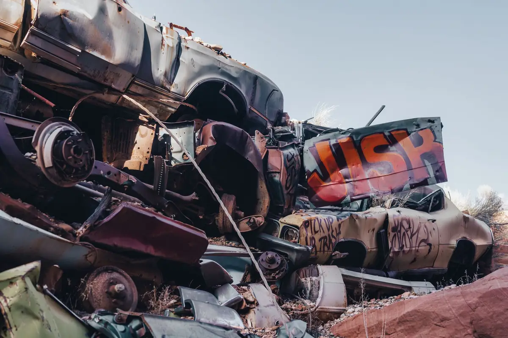

Skup aut w każdym stanie
Kupujemy samochody osobowe i ciężarowe: sprawne, uszkodzone, powypadkowe, bez OC i przeglądu. Odbieramy je lawetą bez opłat.

Szybka sprzedaż auta bez ogłoszeń
Sprzedaż samochodu przez ogłoszenie wymaga zdjęć, odpowiadania na telefony, umawiania oględzin i negocjacji. W przypadku auta uszkodzonego, bez przeglądu albo bez ubezpieczenia znalezienie kupca bywa bardzo trudne. Skup aut rozwiązuje ten problem: jedna rozmowa, jedna wizyta i samochód zostaje sprzedany.
BED-CAR skupuje samochody osobowe i ciężarowe na terenie województwa śląskiego i małopolskiego. Odbieramy auta całe, uszkodzone, powypadkowe oraz przeznaczone do kasacji. Transport lawetą jest bezpłatny.
Jakie auta kupujemy
- Auta sprawnena chodzie, z ważnymi lub nieważnymi dokumentami
- Auta uszkodzonez awarią silnika, skrzyni biegów, elektroniki lub z korozją
- Auta powypadkowepo kolizji, także z rozbitą karoserią i wystrzelonymi poduszkami
- Auta bez OC i przegląduodbieramy lawetą, więc auto nie musi wyjeżdżać na drogę
- Auta do kasacjiniekompletne i wyeksploatowane, przeznaczone do złomowania
Od czego zależy cena
Cenę ustalamy indywidualnie. Bierzemy pod uwagę markę, model i rocznik, stan techniczny, kompletność auta, przebieg oraz to, czy samochód nadaje się do dalszej jazdy lub naprawy. Dokładniejszą wycenę przygotujemy na podstawie zdjęć.
Przebieg sprzedaży
Kontakt
Dzwonisz lub wysyłasz formularz z opisem auta.
Wycena i termin
Przedstawiamy propozycję ceny i umawiamy odbiór.
Odbiór
Przyjeżdżamy lawetą, podpisujemy umowę i wypłacamy pieniądze.
Skup aut: pytania i odpowiedzi
Czy kupujecie auta bez ważnego OC i przeglądu?
Tak. Brak opłaconego OC i aktualnego badania technicznego nie przeszkadza w sprzedaży. Auto odbieramy lawetą, więc nie musi poruszać się po drodze o własnych siłach.
Czy odbiór auta jest płatny?
Nie. Samochód odbieramy lawetą bezpłatnie z terenu województwa śląskiego i małopolskiego.
Jakie dokumenty są potrzebne do sprzedaży auta?
Dowód rejestracyjny, karta pojazdu, jeśli była wydana, oraz dowód osobisty właściciela. Jeżeli auto ma kilku współwłaścicieli, każdy z nich musi podpisać umowę.
Czy kupujecie auta ciężarowe?
Tak. Skupujemy samochody osobowe i ciężarowe, zarówno sprawne, jak i uszkodzone.
Jak szybko możecie odebrać auto?
Termin odbioru ustalamy podczas rozmowy telefonicznej, dopasowując go do Twoich możliwości.